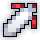
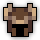
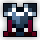
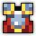
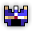
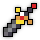
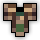
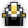

BiS Items & Swapouts:
Main Set:
    
Swapouts:
  
Swapouts Explanation:
more for solo play / celestial o3 phase especially if paired with a wisdom set for long uptime of both buffs during the phase.
BiS Enchants:
- : Hellfire Edge - Attack to Dexterity IV - Attack Tradeoff IV - Onshoot dexterity IV
- : Flurry of blows - Attack to Dexterity IV - Attack Tradeoff IV - Onshoot Dexterity IV
- : Attack to Dexterity IV - Attack Tradeoff IV - Onability Attack IV - Mana Regen IV
- : Attack to Dexterity IV - Attack Tradeoff IV - Onhit Dexterity IV
- : Shaitan's Might - Attack Tradeoff IV - Onability/Onhit Attack IV - Mana Regen IV
- : Attack to Dexterity IV - Attack Tradeoff IV - Onability/Onhit Attack IV - Mana Regen IV
For Attack Tradeoff Enchants, avoid getting -dexterity.